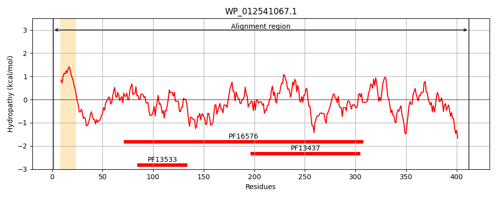
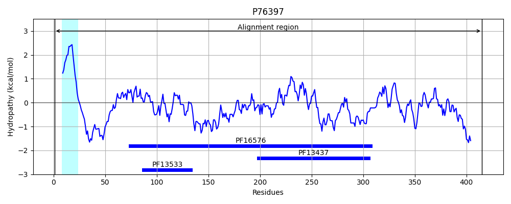
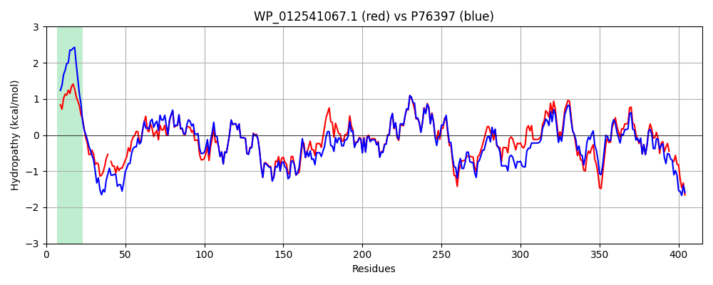

Hit Accession: P76397
Hit TCID: 8.A.1.6.2
Hit Description: gnl|BL_ORD_ID|11464 gnl|TC-DB|P76397|8.A.1.6.2 Multidrug resistance protein mdtA - Escherichia coli (strain K12).
Mach Len: 415
e:0.000000
Query TMS Count : 1
Hit TMS Count: 1
TMS-Overlap Score: 0.850000
Predicted Substrates:None
BLAST Alignment:
Score: 1634 , Bit scores: 634 bits, E-value: 0.0e+00, Alignment length: 415, Percentage identity: 80
Query: 1 MKGSNIRRWGAALAVVIIAGAAYWFWHDRGTSGSSAPAAG-QGPQGPGGARHGRFGGALAPVQAATATEQAVPRYLTGLGTVTAANTVTVRSRVDGQLLSLHFQEGQQVKAGDLLAQIDPSQFKVALAQAQGQLAKDNATLANARRDLARYQQLVKTNLVSRQELDTQQSLVVESAGTVKADEAAVASAQLQLDWTRITAPIDGRVGLKQVDIGNQISSGDTTGIVVLTQTHPIDVVFTLPENSIATVVQAQKAGKALSVEAWDRTNKQKISVGELLSLDNQIDATTGTIKLKARFSNLDDALFPNQFVNARLLVDTEENAVVIPAAALQMGNEGHFVWVLNDENKVSKHSVTPGIQDSQKVVISAGLSAGDRVVTDGIDRLTEGAKVEVVTASG--SEQAQPAPRQSGKHGARS 412
MKGS RW + VVI A AA+WFW R S S+AP A Q Q P G R G G LAPVQAATA EQAVPRYLTGLGT+TAANTVTVRSRVDGQL++LHFQEGQQVKAGDLLA+IDPSQFKVALAQAQGQLAKD ATLANARRDLARYQQL KTNLVSRQELD QQ+LV E+ GT+KADEA+VASAQLQLDW+RITAP+DGRVGLKQVD+GNQISSGDTTGIVV+TQTHPID+VFTLPE+ IATVVQAQKAGK L VEAWDRTN +K+S G LLSLDNQIDATTGTIK+KARF+N DDALFPNQFVNAR+LVDTE+NAVVIP AALQMGNEGHFVWVLN ENKVSKH VTPGIQDSQKVVI AG+SAGDRVVTDGIDRLTEGAKVEVV A + + + R+ K GARS
Sbjct: 1 MKGSYKSRWVIVIVVVIAAIAAFWFWQGRNDSRSAAPGATKQAQQSPAGGRRGMRSGPLAPVQAATAVEQAVPRYLTGLGTITAANTVTVRSRVDGQLIALHFQEGQQVKAGDLLAEIDPSQFKVALAQAQGQLAKDKATLANARRDLARYQQLAKTNLVSRQELDAQQALVSETEGTIKADEASVASAQLQLDWSRITAPVDGRVGLKQVDVGNQISSGDTTGIVVITQTHPIDLVFTLPESDIATVVQAQKAGKPLVVEAWDRTNSKKLSEGTLLSLDNQIDATTGTIKVKARFNNQDDALFPNQFVNARMLVDTEQNAVVIPTAALQMGNEGHFVWVLNSENKVSKHLVTPGIQDSQKVVIRAGISAGDRVVTDGIDRLTEGAKVEVVEAQSATTPEEKATSREYAKKGARS 415 | Protein Hydropathy Plots: |
|---|
|  |  |
Pairwise Alignment-Hydropathy Plot:
|
|---|
|  |